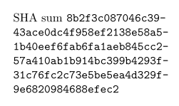
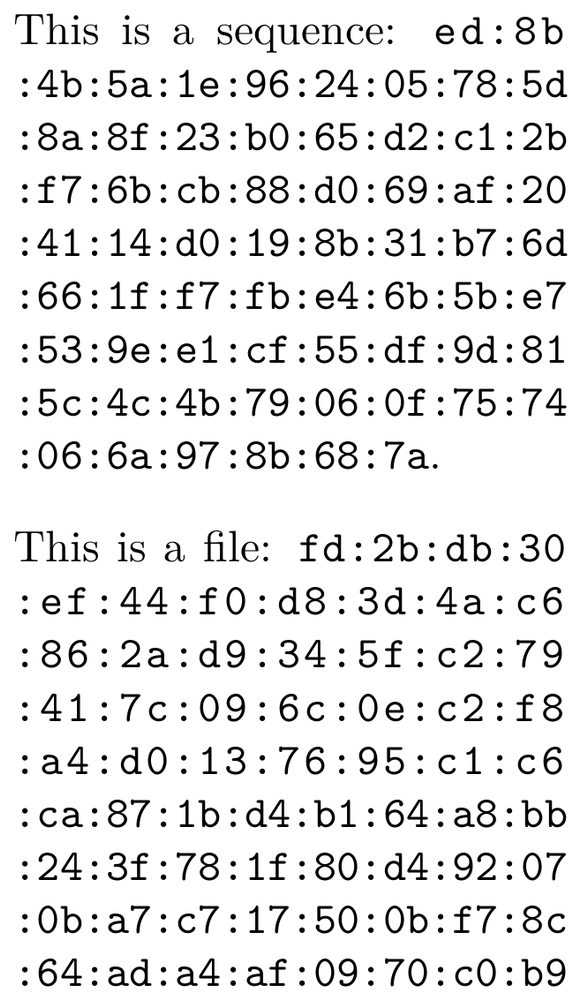
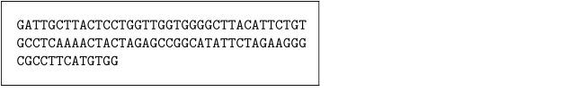
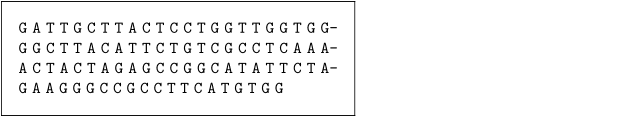
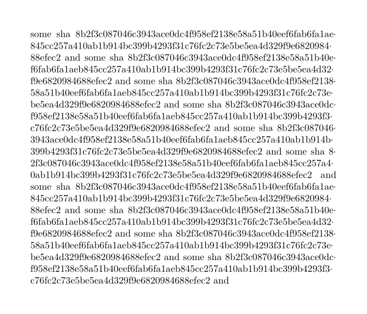
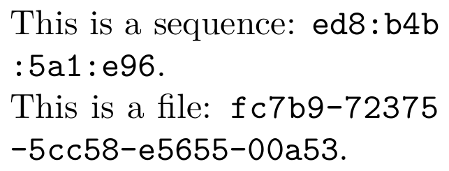

Very long continuous strings (such as SHA512 keys or DNA sequences) might have to be broken after any character, independent from the current hyphenation scheme.
Contents
Line breaking with SHA512 sums
Hans provided a way of breaking SHA512 sums in lines (now being checked).[1]
Workaround with soft hyphens
As a workaround, a simpler way to break SHA sums in lines, but without any character would be (abusing both \handletokens and \softhyphen):
-
\define[1]\SHA{{\tt\handletokens #1\with\SHABreak}} \define[1]\SHABreak{#1\softhyphen\hskip 0pt} \startTEXpage[offset=1em, width=15em] SHA sum \SHA{8b2f3c087046c3943ace0dc4f958ef2138e58a51b40e% ef6fab6fa1aeb845cc257a410ab1b914bc399b4293f% 31c76fc2c73e5be5ea4d329f9e6820984688efec2} \stopTEXpage
- 
Another workaround interleaving colons
Another workaround that also helps to improve readability are interleaved colons every two characters. Of course you might change the number of chars without colons adding single dots to str:match(".."). Please, keep in mind that this will make line wrapping not easier in some places. Of course, there is also a way to shorten the hash string.[2]
-
\startluacode require("util-sha") function document.coloniter(str) local n = 0 for c in str:gmatch("..") do if n > 0 then context((":%s"):format(c)) else context(c) end n = n + 1 end end \stopluacode \unexpanded\def\hsa[#1]% {{\tt\hyphenatedurl% {\ctxlua{document.coloniter(utilities.sha2.hash512("#1"))}}}} \unexpanded\def\hsafile[#1]% {\doiffileelse{#1}{{\tt\hyphenatedurl {\ctxlua{document.coloniter(utilities.sha2.hash512(io.loaddata("#1")))}}}} {{\bfd\color[red]{\type{#1} not available!!!}}}} \setupbodyfont[24pt] \startTEXpage[offset=1dk] This is a sequence: \hsa[This is a sequence]. \blank This is a file: \hsafile[\jobname.tex] \stopTEXpage
- 
Example DNA sequences
This is an adoption from Wolfgang using Lua:
-
\startluacode local shared = { start = 1, length = 1, before = nil, after = nil, left = false, right = false, } local all = table.setmetatableindex({ }, function(t,k) return shared end) languages.hyphenators.traditional.installmethod("dna", function(dictionary,word,n) return all end ) \stopluacode \definehyphenationfeatures [dna] [characters=all, alternative=dna] \startframedtext[width=6cm,style=mono] \sethyphenationfeatures[dna] \setuphyphenation[method=traditional] GATTGCTTACTCCTGGTTGGTGGGGCTTACATTCTGTCGCCTCAAAACTACTAGAGCCGGCATATTCTAGAAGGGCCGCCTTCATGTGG \stopframedtext
- 
And a solution using \handletokens by Rik:
-
\define[1]\DNA{\handletokens #1\with\DNAspacer} \define[1]\DNAspacer{#1\hskip 2.3pt plus .1pt} \startframedtext[width=6cm,style=mono] \DNA{GATTGCTTACTCCTGGTTGGTGGGGCTTACATTCTGTCGCCTCAAAACTACTAGAGCCGGCATATTCTAGAAGGGCCGCCTTCATGTGG} \stopframedtext
- 
One caveat, however: this method always adds the spacer value, and can result in a blank line at the end in some cases, even when the spacer value is zero. This is not the case with the lua mechanism.
See also
- Hyphenation
- \hyphenation to define the hyphenation of a specific word
- \startexceptions to define language-specific hyphenations
- \- to define an ad-hoc breakpoint
- \unhyphenated to prevent hyphenation
- \doublehyphendemerits to penalize hyphenation on consecutive lines
- \setupalign justification parameters to tweak the auto-hyphenation algorithm
- \definebreakpoints to initialize a breakpoint set
- \definebreakpoint to add to a breakpoint set
- \setbreakpoints to activate a breakpoint set
- \language to activate a language's settings, including hyphenation
- Wrapping
Verbatim with line breaks for another solution to the problem above.
Help from ConTeXt-Mailinglist/Forum
All issues with:
- SHA512 on the mailing list (all results)
- SHA512 on the mailing list (subject only)
- SHA512 on stack exchange
- SHA512 in ConTeXt's source
- after x characters+sort:newest Linebreak after x characters on the mailing list (all results)
- after x characters+sort:newest Linebreak after x characters on the mailing list (subject only)
- after x characters Linebreak after x characters on stack exchange
- after x characters Linebreak after x characters in ConTeXt's source
Footnotes
-
↑
There might be an issue with the custom hyphenator that needs to be reviewed, since the first characters in the new line are missing.
-
\startluacode -- local shared = { -- start = 1, -- length = 1, -- left = false, -- right = false, -- } local shared = { start = 1, length = 1, before = utf.char(0xB7), after = nil, left = false, right = false, } -- languages.hyphenators.traditional.installmethod("sha", -- function(dictionary,word,n) -- local t = { } -- for i=1,#word do -- t[i] = shared -- end -- return t -- end -- ) -- or more efficient when used often: -- local all = { } -- for i=1,512 do -- all[i] = shared -- end -- languages.hyphenators.traditional.installmethod("sha", -- function(dictionary,word,n) -- return all -- end -- ) -- or more obscure: -- local all = table.setmetatableindex({ }, function(t,k) -- t[k] = shared -- return shared -- end) -- -- languages.hyphenators.traditional.installmethod("sha", -- function(dictionary,word,n) -- return all -- end -- ) -- or just (lua is fast enough anyway) local all = table.setmetatableindex({ }, function(t,k) return shared end) languages.hyphenators.traditional.installmethod("sha", function(dictionary,word,n) return all end ) \stopluacode \definehyphenationfeatures [sha] [characters=all, alternative=sha] % \unexpanded\def\sha#1% % {\begingroup % \sethyphenationfeatures[sha]% % #1% % \endgroup} % % \setuphyphenation[method=traditional] \unexpanded\def\sha#1% {\begingroup \sethyphenationfeatures[sha]% \setuphyphenation[method=traditional]% #1% \endgroup} \showframe \startTEXpage[offset=3em] \setupalign[tolerant,stretch] \dorecurse {10} {% some sha \sha{8b2f3c087046c3943ace0dc4f958ef2138e58a51b40e% ef6fab6fa1aeb845cc257a410ab1b914bc399b4293f% 31c76fc2c73e5be5ea4d329f9e6820984688efec2} and } \stopTEXpage
- 
-
-
↑
A richer sample could set a smaller string length, another interval and a different character.
-
\startluacode require("util-sha") function document.coloniter(str,long,inter,sep) local n = 0 long = tonumber(long) inter = tonumber(inter) if inter == "" then inter = 2 end if sep == "" then sep = ":" end if long ~= nil and long > 0 then if long % inter > 0 then long = long + (inter - (long % inter)) end str = str:sub(0,long) end for c in str:gmatch(("."):rep(inter)) do if n > 0 then context(("%s%s"):format(sep,c)) else context(c) end n = n + 1 end end \stopluacode \unexpanded\def\hsa[#1][#2][#3][#4]% {{\tt\hyphenatedurl {\ctxlua{document.coloniter(utilities.sha2.hash512("#1"),"#2","#3","#4")}}}} \unexpanded\def\hsafile[#1][#2][#3][#4]% {\doiffileelse{#1}{{\tt\hyphenatedurl {\ctxlua{document.coloniter(utilities.sha2.hash512(io.loaddata("#1")),"#2","#3","#4")}}}} {{\bfd\color[red]{\type{#1} not available!!!}}}} \setupbodyfont[24pt] \starttext \startTEXpage[offset=1dk] This is a sequence: \hsa[This is a sequence][10][3][]. This is a file: \hsafile[\jobname.tex][23][5][-]. \stopTEXpage \stoptext
- 
In this sample, the four arguments are the string (or the file) to be hashed, the length of the hash string, how many characters each interval has, and the interleaved character. Consider that not all chars break lines with \hyphenatedurl -
-